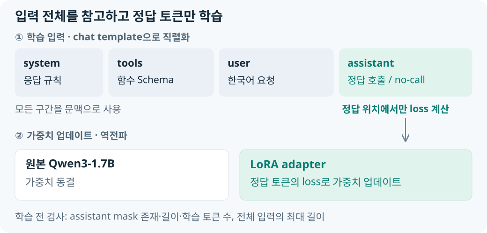

한국어 요청과 정답 함수 호출을 짝지어 LoRA로 학습했습니다. 요청과 도구 Schema는 문맥으로 제공하고, assistant 정답 토큰에만 손실을 적용했습니다. 원본 Qwen3-1.7B 가중치는 동결한 채 LoRA adapter를 업데이트한 뒤, 원본과 병합해 vLLM에서 실행했습니다.
교정 대상은 원본 모델에서 관찰한 잘못된 인자와 오호출이었습니다. 이를 위해 정답 토큰을 학습하는 입력 구성 → 학습 전 검사 → adapter 업데이트 → 병합 모델의 API 평가를 연결했습니다. mask와 입력 길이 검사는 준비한 정답이 학습 대상에서 빠지지 않도록 추가한 사전 검사입니다.
요청은 문맥으로, 정답은 학습 대상으로 구분
한 학습 예제에는 system 메시지, 다섯 함수의 Schema, 한국어 요청, assistant 정답이 들어갑니다. Jinja chat template은 이 구조를 Qwen이 읽는 대화 문자열로 바꾸고, {% generation %} 구간으로 assistant 정답 위치를 표시합니다.
assistant_only_loss=True로 이 위치에서만 손실을 계산합니다. 모델은 요청과 함수 목록을 참고하되, 업데이트의 기준은 정답 호출이나 no-call 응답을 얼마나 정확하게 예측했는지가 됩니다.

정답에 어떤 함수와 인자를 넣을지는 데이터·정답 계약에서 정했습니다. 학습 구현은 그 정답이 올바른 토큰 위치에 놓이도록 입력을 구성합니다.
마스크와 입력 길이를 검사한 뒤 학습 시작
학습 스크립트는 가중치를 불러오기 전에 데이터 구조, tokenizer와 template, assistant mask, 입력 길이를 검사합니다. --validate-only를 사용하면 이 검사까지만 수행합니다.
| 확인 대상 | 구현한 검사 | 방지하려는 문제 |
|---|---|---|
| 학습 데이터 | JSONL의 메시지·도구·assistant 정답 구조 검사 | 잘못된 데이터 형식으로 학습 시작 |
| Assistant mask | 호출 2건·no-call 1건에서 mask 누락·입력과의 길이 불일치·학습 토큰 0개이면 중단 | assistant 정답에 loss가 적용되지 않음 |
| 입력 길이 | Train·Validation 900건에 template을 적용하고 1,152 토큰을 넘으면 중단 | 최대 길이 초과로 답안이 잘림 |
| 모델 입력 | revision·tokenizer·PAD/EOS·chat template 기록과 저장 | 학습과 서빙에서 입력 표현이 어긋남 |
이 검사를 통과한 입력으로 LoRA 학습을 진행했습니다. tokenizer·template·mask의 연결과 검사 코드는 정답 토큰을 학습하는 입력 구성과 검증에 정리했습니다.
원본을 동결하고 LoRA adapter만 업데이트
Train 800건과 Validation 100건을 사용해 1 epoch 학습했습니다. Attention·MLP의 Linear 계층에 rank 16·alpha 32의 LoRA adapter를 붙였으며, 학습 파라미터는 17,432,576개로 전체의 약 1.003%였습니다.
| 설정 | 적용한 값과 역할 |
|---|---|
| BF16 | 원본 모델과 학습 연산의 정밀도 |
| LoRA rank 16·alpha 32 | 원본 출력에 더할 보정 경로의 크기와 배율 |
| GPU batch 1·gradient accumulation 16 | 16개 예제의 gradient를 모아 한 번 업데이트 |
Learning rate 2e-4 |
adapter 가중치의 업데이트 크기 |
| 1 epoch·50 update | Train 800건을 한 번 학습한 실행 기록 |
설정은 LoraConfig와 SFTConfig에 넣고, SFTTrainer에 데이터·tokenizer·LoRA 구성을 연결했습니다. 실제 가중치 업데이트는 trainer.train()에서 수행합니다. 학습이 끝나면 adapter, tokenizer, Trainer 상태와 손실 지표를 저장합니다.
LoRA의 행렬 연산과 loss·optimizer·메모리 설정은 LoRA 가중치 업데이트와 학습 설정에서 설명합니다.
1 epoch 학습을 마친 모델의 API 평가
NVIDIA RTX A5000에서 BF16으로 Train 800건을 한 번 학습했습니다. 저장된 Trainer 상태는 50회 업데이트, 학습 시간 약 11분 11초를 기록합니다. train loss는 0.1689955, validation loss는 0.0382430입니다. 이 값은 정답 토큰의 예측 손실이며, 실제 함수명·인자의 정확도는 별도의 응답 평가에서 계산했습니다.
학습한 adapter를 단독 모델처럼 실행할 수 있도록 원본 BF16 가중치와 병합했습니다. merge_peft_adapter.py는 원본 모델과 adapter를 읽어 merge_and_unload()를 호출하고, 병합 모델과 tokenizer를 저장합니다. 이 모델을 vLLM에 올려 학습 전과 같은 API 형식으로 평가했습니다.
전체 소스는 학습 스크립트와 실행 흐름, 병합·실행 명령은 adapter 병합과 vLLM 서빙에 있습니다. 이렇게 만든 모델의 실제 응답 변화는 학습 전후 평가와 응답 변화에서 확인할 수 있습니다.
실제 revision·데이터 및 템플릿 체크섬·패키지 버전은 학습 설정과 실행 원본 기록에 함께 정리했습니다.
Python·CUDA 기초와 설정별 코드 발췌는 학습 코드 참고 해설에서 확인할 수 있습니다.